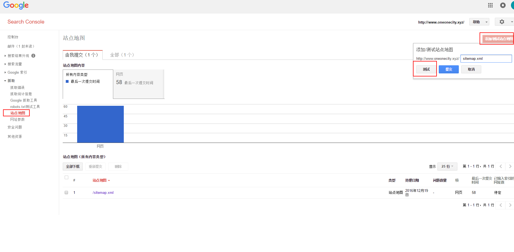

搭建成果
我使用的是 NexT 主题下的 Mist Scheme。博客展示：H.Y’s BLOG。
在博客底部有关于所使用的 Hexo 以及 NexT 主题的版本号，各个版本的配置文件之间也许会有差距，但这不足以影响大家参照本篇博客从而构建自己喜欢的博客样式。
按照NexT官方文档的说法，如果大家的NexT版本还停留在5.x及以前，强烈建议大家将版本升级至6.x~
使用Hexo与NexT
Hexo官方使用文档：Hexo。
NexT主题官方使用文档：NexT。
基本上，按照上述两个文档，你就可以搭建出一个漂亮且可用的博客了，但如大家所见，我的博客中还有诸多扩展功能，这篇文章主要介绍如何将你的博客修饰的更加漂亮！
注：在Hexo中有两份主要的配置文件，其名称都是_config.yml。其中，一份位于站点根目录下，主要包含Hexo本身的配置；另一份位于主题目录下，这份配置由主题作者提供，主要用于配置主题相关的选项。
为了描述方便，在以下说明中，将前者称为站点配置文件， 后者称为主题配置文件。
升级NexT主题
更新操作何其不易，官方文档何其简陋：Hexo 3-DATA-FILES。
主页修饰
修改Favicon图标
Favicon是favorites icon的缩写，亦被称为website icon（网页图标）、page icon（页面图标）或urlicon（URL图标），也就是网站标签页上的小图标。
首先推荐一个下载favicon图标的网站：easyicon。如果这个网站不能进行下载的话，就在图标宝网站进行下载，至于图标的大小，应该是没有限制的。
在主题配置文件中定位到如下代码可以修改网站的Favicon图标：
1 | favicon: |
默认NexT主题的Favicon图标是存放在hexo-site/themes/next/source/images/目录下的。
修改LOGO字体
也许有一些人不知道博客的LOGO是什么，就是我博客首页中显示的H.Y's BLOG，在主题配置文件中进行如下修改：
1 | # Font settings for Logo. |
你可以在Google Fonts中寻找你喜欢的字体。
添加菜单项
如果想要在菜单栏中添加“音乐”一项，首先应在站点根目录下运行如下命令：
1 | $ hexo new page music |
然后在主题配置文件中进行如下修改：
1 | # `||` 后的值来自 FontAwesome icon。在 FontAwesome icon 中可以选择自己喜欢的 icon，直接填写 icon 对应的英文名即可。 |
如果我们使用的是简体中文，还需修改hexo-site\themes\next\languages\zh-CN.yml文件：
1 | menu: |
启用本地搜索
在站点的根目录下执行以下命令：
1 | $ npm install hexo-generator-searchdb --save |
编辑站点配置文件，新增以下内容到任意位置：
1 | search: |
编辑主题配置文件，启用本地搜索功能：
1 | local_search: |
此功能在localhost:4000好像无法进行测试，需要将页面部署至GitPage上，才能正常使用。
圆形侧栏头像
hexo-site\themes\next\source\css\_custom\custom.styl中添加如下代码：
1 | // 圆形侧栏头像 |
添加RSS订阅
关于RSS的介绍，我发现阮一峰老师讲解的特别简单与清楚：如何使用RSS。
总结一下，我们可以通过在线型RSS阅读器或桌面型RSS阅读器来订阅自己喜欢的RSS内容，以后只要打开相关的RSS阅读器，就可以看到来自你订阅的不同网站的所有内容了。
想要在我们的博客中添加RSS订阅，其实非常简单，我们只需要安装hexo-generator-feed插件，然后在站点配置文件与主题配置文件进行相应参数的设置就可以了。
具体操作流程参考hexo-generator-feed。其中Options一栏中的内容对相应的配置参数进行了详细的解释。
也可以参考我本人的设置，在站点配置文件中添加如下内容：
1 | # RSS订阅（下载完插件后，以下两行代码应该是直接有的，不需要添加） |
底部显示红心
编辑主题配置文件：
1 | # Icon between year and copyright info. |
文章页修饰
使用blockquote标签
可以看到我的about页面以及music页面都有特殊的引用块，我们只需给发表的文章中添加如下内容，即可显示相同的样式：
1 | <blockquote class="blockquote-center">快乐的时候，你听的是音乐。难过的时候，你开始懂得了歌词。 |
详见：内置标签-文本居中的引用。
添加文章阅读次数
虽然不蒜子也可以进行文章阅读次数的统计，但由于其只能在文章列表页中显示文章阅读数，因此博主选择使用 LeanCloud 进行博文阅读数的统计，NexT 主题为 6.x 版本的朋友们，请参照官方使用文档：LEANCLOUD-COUNTER-SECURITY。
在配置过程中，需要注意的只有一点，在官方文档的描述中，有一步需要进行如下配置：
1 | # 在站点配置文件deploy下添加项： |
博主刚开始误会了其中的意思，导致配置文件出现了语法错误，正确的配置如下：
1 | deploy: |
注：若你的博客通过 http 方式访问，则需要将主题配置文件中的 security: false 如此设置，LeanCloud 中的 Counter 类才能接收到数据。当 使用HTTPS方式访问你的博客 时，完全按照官方文档进行配置，才会成功。
添加字数统计与阅读时长
添加字数统计与阅读时长的方式有很多，我选择使用hexo-symbols-count-time插件。根据我博客所使用的NexT版本，在其主题配置文件中，可以直接定位到如下代码：
1 | # Post wordcount display settings |
正如此插件中的README所述，这个插件集成在NexT主题中，但是如果想要打开这个插件，还需要在站点配置文件中进行一些参数的配置，站点配置文件中应该添加的代码：
1 | # 字数，阅读时长统计 |
修改文章字体大小
NexT主题的字体在默认配置下有点小，我们可以在hexo-site\themes\next\source\css\_variables目录下对base.styl文件进行修改以改变字体大小。
1 | // Font size |
修改完之后，保存文件。重新部署hexo，就可以看到博客字体已经变成你想要的大小了。
修改文章内链接样式
修改文件hexo-site\themes\next\source\css\_common\components\post\post.styl，在末尾添加如下css样式：
1 | // 文章内链接文本样式 |
其中选择.post-body是为了不影响标题，选择p是为了不影响首页“阅读全文”的显示样式，颜色可以自己定义。
小代码块自定义样式
在hexo-site\themes\next\source\css\_custom\custom.styl文件中添加如下代码：
1 | // ``内的代码块自定义样式 |
代码框为圆角
hexo-site\themes\next\source\css\_common\components\highlight\highlight.styl文件修改如下代码：
1 | code { |
代码块复制功能
事实上，NexT 6.x版本已经集成了clipboard.js插件，在主题配置文件中打开就行：
1 | codeblock: |
修改文章底部 # 标签
编辑hexo-site\themes\next\layout\_macro\post.swig文件，搜索rel="tag">#，将#换成<i class="fa fa-tag"></i>。
其中fa fa-tag可以换成自己喜欢的Font Awesome图标。
为文章添加版权信息
打开主题配置文件：
1 | # Declare license on posts |
增加侧边阅读百分比进度条
打开主题配置文件，搜索关键字scrollpercent，把false改为true：
1 | # Scroll percent label in b2t button. |
页面所占宽度调节
打开hexo-site\themes\next\source\css\_common\components\post\post-expand.styl文件，修改：
1 | - @media (max-width: 767px) |
打开hexo-site\themes\next\source\css\_variables\base.styl文件，修改：
1 | - $main-desktop = 960px |
添加Gitalk评论系统
NexT 主题内集成的评论系统种类非常多，目前使用度以及好评度最高的应属 Valine 评论系统，在对 Valine 评论系统进行一番考量之后，还是决定放弃 Valine，原因主要如下：
- 我之前使用的是 LiveRe（来必力）评论系统，各方面使用体验都不错，并没有觉得使用 LiveRe 会拖累网页加载速度。相反，LiveRe 系统不能提供评论提醒是我放弃他的最主要原因。作为一个评论系统，如果没法及时的回复读者的评论，并且读者也无法收到你已回复的通知，那无疑是失败的；
- Valine 以轻量易用著称，并且提供了邮件通知功能，但 Valine 在诸多方面做得差强人意，比如邮件提醒链接无法直达指定文章页，只能通过进入 Leancloud 管理后台查看评论信息，才能确定评论是出现在哪一文章下。除此之外，Valine 所包含的小毛病还有很多，大家可以通过阅读官方文档进行权衡——是否使用 Valine 作为你的评论系统。
最终，我选择了 Gitalk 作为博客的评论系统，Gitalk 有如下特性：
- 使用 GitHub 登录，并基于 GitHub Issues 开发，由于我的博客使用 Git Pages 搭建，被托管在 GitHub 服务器上，因此 Gitalk 是一个不错的选择；
- 界面简洁漂亮，个人觉得比起 Valine 也不遑多让；
- Gitalk 使用 GitHub 的 Issues 作为评论内容的存储位置，每一篇文章都会对应存储评论仓库下的一个 Issue，此功能可让你通过评论直达指定文章页，弥补了 Valine 的缺点；
- 最重要的是，Gitalk 除了会在 GitHub 主页提醒何人何时给你提了一个 Issue——评论，还可以实现钉钉机器人实时提醒，你将不会错过任何一条评论，并且能够给予读者及时的回复，GitHub 主页同样会提醒读者已回复的内容。
如果要说 Gitalk 比 Valine 麻烦的一点，也许就是评论时需要登录 GitHub 账户，不过换个角度思考，每一个能够实现消息提醒的系统，基本上都需要进行登录操作，而你的博客既然能够托管在 Git Pages 上，我想面向的读者应该大部分都拥有 GitHub 账号。因此，你完全不用担心使用 Gitalk 是否会大幅降低博客评论量这一可能出现的问题~
将 NexT 主题升级至 v6.6.0 版本及以上时，可直接在主题配置文件中设置 gitalk 相关配置项，而博主的 NexT 主题版本只有 v6.3.0，因此参考 Hexo博客添加Gitalk评论系统 进行配置。
扩展功能
移动端显示侧边栏
NexT主题添加这功能，前提是使用的主题模版是Muse或Mist，然后直接在主题配置文件中配置：
1 | # Enable sidebar on narrow view (only for Muse | Mist). |
使用hexo-tag-aplayer插件进行音乐播放
hexo-tag-aplayer的GitHub链接：MoePlayer/hexo-tag-aplayer。
aplayer的中文文档链接：Aplayer。
安装好插件后，我按文档中MeingJS支持 (3.0 新功能)一栏中的操作指引进行执行，最后在hexo-site\source\music\index.md中进行了如下编辑，插件使用成功。
1 | --- |
个人主页的id直接使用自己的账号登录网页版网易云音乐在URL栏就可以获取到；播放列表的id值可以通过chrome控制栏显示网页源码然后使用CTRL+SHIFT+C组合键直接点击喜欢的歌单就可以查找到，或是直接在我的主页定位到以下网页源码，从中获取播放列表的id：
1 | <a href="/playlist?id=******" class="msk" title="******"></a> |
使用hexo-tag-dplayer插件进行视频播放
在Hexo博客中插入视频的方法有多种，使用iframe标签直接进行插入，使用video插件等等，但我还是选择hexo-tag-dplayer，此插件与hexo-tag-aplayer一样，界面清爽简洁美观，功能强大。
hexo-tag-dplayer的GitHub链接：MoePlayer/hexo-tag-dplayer。
dplayer的中文文档链接：DPlayer。
此插件在使用时，只能播放视频直链（也就是浏览器访问后直接是下载界面的那种），获取视频直链的方法我这里有一个特别方便的第三方网站，分享给大家：parse video。一般来说，如果使用dplayer解析直链失败的话，那我们就需要对视频进行下载（自建），然后将视频资源同步到GitHub仓库上，这样做的缺点很明显，如果需要寻求更好的方法，那么我们可以将视频资源下载后再上传至百度云盘，然后获取下载直链。如果你喜欢折腾，那么还可以通过OneDrive自行部署-OneIndex部署教程，利用OneDrive打造专属分享型网盘。
最后贴上我使用dplayer的源代码：
{% dplayer "url=Don't forget.mp4" "api=https://api.prprpr.me/dplayer3/" "addition=https://api.prprpr.me/dplayer/v3/bilibili?aid=1256375" "loop=false" "theme=#FADFA3" "autoplay=false" %}
注：dplayer支持bilibili弹幕实时同步，上述代码中的api代表引入哔哩哔哩弹幕库解析API，要同步哪个视频的弹幕，只需将addition所对应值中的aid进行改变即可，aid所对应的值为视频的AV号。
添加fullPage.js页面
在我博客的菜单栏中有这样一项：“碎语”，编写此页面的灵感及页面源码都来自LEAFER x LAB。
此页面使用jquery.fullpage进行编写，GitHub链接：alvarotrigo/fullPage.js。因为此页面也是纯静态页面，因此你可以直接根据网页源码copy出一份极度相似的页面，具体的过程我不再描述。
在网页源码中有如下两行代码：
1 | <script type="text/javascript" src="https://cdn.webfont.youziku.com/wwwroot/js/wf/youziku.api.min.js"></script> |
我们在自定义页面中使用的字体来自有字库，上面两行代码就是有字库在网页中JS模式插件的应用。在将字体设置好后，我们还需要将域名配置在有字库的白名单中，并且需要注意的是，JS模式中字体的Accesskey一定要配置为自己的，否则配置在远程上的页面，其字体无法正常显示。
在我们编写好页面之后，需要将其展示到我们的博客上。因为此页面是自定义页面，所以需要跳过Hexo的渲染过程，否则Hexo会在渲染的过程中产生Error，关于这个问题，在Hexo相关的Issues中已经有了明确的解决方案：编辑站点配置文件中的skip_render — 如何不处理source目录下某个子目录的所有文件，仅仅是将其copy到public目录中对应目录？
添加热文页面
参考 Git Pages 使用指南-添加阅读榜。在统计文章阅读数量时我们用到了 LeanCloud，通过 LeanCloud 提供的 api 编写 js 脚本获取阅读数量信息，并展示在页面上，就可以添加热文页面。
首先我们需要 添加菜单项，并设置中英文和图标。然后在添加菜单项时生成的 index.md 文件中添加如下代码：
1 | --- |
高级使用
使用HTTPS方式访问你的博客
由于我是在腾讯云购买的域名，因此可以在腾讯云官方网站申请免费的 SSL 证书，具体的链接我不再贴出，只要你认真寻找就能发现。
在申请成功之后，等待 20 分钟左右即可收到签发成功的通知，也可在证书控制台中实时查看审核进度。之后在浏览器中输入 https://域名/ ，就可以看到地址栏前面有一个锁头，点开可以查看证书的相关信息~
按照上述步骤添加了 SSL 证书后，发现如果在地址栏中输入的是 https://域名/ 就会有锁头，如果输入的是 http://域名/，则还是 http，并不会自动跳转至 https。其解决方案如下：
登录 GitHub，进入自己的 GitHub.io 项目中，点击 Setting，往下拉，可以看到有个选项叫 Enforce HTTPS，点击勾选即可。
让Google与Baidu收录你的博客
在将整个站点 HTTPS 化之后，我们就可以让 Google 及 Baidu 收录我们的站点了。
验证站点是否被收录
Google 验证：Google 搜索 site:www.oneonecity.xyz，域名换成你自己的，如果没有找到你的博客说明没有被收录！
Baidu 验证：Baidu 搜索 site:www.oneonecity.xyz，同 Google。
生成Sitemap站点地图
Sitemap 的主要目的，是避免搜索引擎没有完整的收录整个网页的内容，提交 Sitemap 能够补足搜索引擎的不足，进而加速网页的收录速度，达到搜寻引擎友好的目的。注意path前面是二个空格缩进。
安装 Sitemap 插件，对于国内用户还需要安装 hexo-generator-baidu-sitemap：1
2npm install hexo-generator-sitemap --save
npm install hexo-generator-baidu-sitemap --save
修改站点配置文件中的 URL 为你博客首页，这样是为了保证生成的 sitemap.xml 文件中地址正确：
1 | # URL |
在站点配置文件中添加以下代码：
1 | sitemap: |
执行 hexo g，正常情况下会在站点根目录的 public 文件夹下看到两个文件：sitemap.xml 和 baidusitemap.xml；执行 hexo d，输入正确的域名路径，还可访问 sitemap.xml 和 baidusitemap.xml。
Google收录（未验证）
进入 Google Search Console，必须有 Google 账号才能添加站点，没有的话注册一个。

点添加属性，把自己的域名输入进去即可，然后 Google 会验证你对网站的所有权，验证方式同百度，我们下文再说。
验证完成之后，还需要向 Google 提交站点地图。点击控制台–>抓取–>站点地图，点击右上角 添加/测试站点地图 按钮，将你的 sitemap.xml 提交测试，测试成功之后重复该步骤进行添加！

点击控制台–>抓取–>Google 抓取工具，在这里填上需要抓取的 URL，不填的话默认抓取首页，抓取类型分为桌面，智能手机两种，自行根据需要选择。填好 URL 之后，点击抓取，提交至索引，根据提示操作就可以了。
Baidu收录
百度提交网址入口：站点管理-添加网站。
在添加网站之后，百度会验证你对网站的所有权，通过验证之后百度会认为你是网站的所有者，然后就能做诸如自动推送、手动推送的高级功能！想要提交 baidusitemap.xml 给百度，通过网站验证是必不可少的一部分。
百度提供了三种验证方式：文件验证、HTML 标签验证和 CNAME 验证。HTML 标签验证最为麻烦，不在这里赘述，CNAME 是最简单的验证方式，但是博主按照网上教程所述的方式一直未能验证成功，最后使用的是文件验证方式。
1. 文件验证

如图所示，下载验证文件，其是一个 HTML 文件，里面存放着你的 token 信息！然后将这个文件放在站点根目录的 source 文件夹下，并在站点配置文件中配置如下项：
1 | # 跳过指定文件的渲染 |
编译并部署你的博客：hexo d -g，完成验证。
2. CNAME验证（未成功）
如果你绑定了自己的域名，这种方式是最简单的！如图添加一条新的 CNAME 解析：记录类型是 CNAME，主机记录是你的 token，记录值是 zz.baidu.com，其他默认：

点击完成验证即可。
完成验证之后，就可以在数据引入–>链接提交页面下的自动提交中提交 baidusitemap.xml 文件。
接下来就等待被 Google 和 Baidu 收录吧。
使用CDN加速博客访问速度
想要使用 CDN 加速服务的域名必须先完成中国大陆的备案！
想要使用 CDN 加速服务的域名必须先完成中国大陆的备案！
想要使用 CDN 加速服务的域名必须先完成中国大陆的备案！
很可惜，博主的 .name 目前并不在工信部可支持备案的域名后缀白名单中！因此强烈建议大家在选择域名的时候尽量购买常用域名，如：.com、.cn 等，如果实在想要突出个性，.info 以及 .zone 都是不错的选择~
翻阅网络上大多数 CDN 加速网站访问速度的教程，发现大多数都建议将对象存储服务以及 CDN 加速服务搭配使用…博主对 CDN 还算进行过比较深入的学习，在看到这个建议后非常疑惑，加速 Hexo 这种小型静态网站的访问速度只使用 CDN 服务应该能够完全满足需求，何必要上对象存储服务？
抱着这样的疑惑，博主对对象存储进行了简单的了解，发现对象存储的功能就是存储一些静态资源，并不会提高整个网站的访问速度。对象存储服务应该是提供给那些拥有大量如图片、视频等这种耗费硬盘空间的静态资源并且整个网站的构建、部署是在自家服务器上的应用，而我们的博客已经托管给 GitPage，完全不用担心图片、视频等静态资源会占用大量的硬盘空间。因此博主断定，想要加速网站的访问速度，只使用 CDN 服务即可。
我的域名是在腾讯云上买的，腾讯云同样提供 CDN 服务，其他云服务厂商情况应该大致相同，除此之外，七牛云提供的 CDN 服务好像也很不错。
CDN 服务的相关配置非常简单，这里我就不再赘述了，网络上教程很多，大家可以自行寻找。
博客的备份与迁移
本来打算将 Hexo 博客迁移至公司电脑上，以便在公司电脑上所写的文章也可以直接发布至个人博客中，但在考虑下述因素后，放弃了这个想法：
在办公电脑上存在两个 GitHub 账号也不是不行，但是经常听闻某公司某某实习生将公司代码上传至个人 GitHub 的仓库中，综合公司财产安全以及个人职业生涯发展方面的考虑，遂决定还是将办公电脑与个人电脑的使用分离开来（主要还是对 GitHub 的使用不是很熟悉，所以不敢乱搞，哈哈哈~）。
不过这并不影响你在办公电脑上写一些很棒的文章，然后通过你的个人电脑发布至 Hexo 博客上，因为我们有一个很棒的多人协作、实时同步的 markdown 编辑软件：Cmd Markdown。
即使如此，对 Hexo 博客进行备份仍旧非常有必要。你的个人电脑终究有淘汰的一天，此时就必须将 Hexo 博客迁移至新电脑中，而对博客进行备份乃是能够成功迁移的第一步。
hexo g 命令是根据 _config.yml，source 目录文件以及 themes 目录下文件生成博客文件的。因此，我们需要备份的文件如下：
| 文件（夹） | 说明 |
|---|---|
| scaffolds/ | 博客文章模板 |
| source/ | 所有的博客文章 |
| themes/ | 网站主题 |
| .gitignore | push时需忽略的文件 |
| _config.yml | 站点配置文件 |
| package.json | 依赖包的名称和版本号 |
.gitignore 文件内容如下：
1 | .DS_Store |
备份
由于配置文件和主题文件需要经常更改，采用 GitHub 创建博客分支的方式进行备份。
克隆 GitHub 上生成的静态文件到你的备份文件夹中：git clone https://github.com/yourname/xxxx.github.io.git
克隆后将除 .git 文件外其他所有文件删除，目的是为了得到版本管理文件夹 .git。.git 文件为隐藏文件，可直接将可见文件全部删除。
将需要备份的原文件复制到此文件夹，若文件夹是按照上述方式从 GitHub 克隆的，则需要删除主题文件中的版本控制文件夹，以 next 主题为例：rm -rf themes/next/.git*。
创建名为 backups 的分支：git checkout -b backups，保存所有文件到暂存区：git add .，提交变更：git commit -m "hexo-backups"，提交变更时如果出错，根据相关提示配置即可，最后推送分支到 GitHub，并用 –set-upstream 与 origin 创建关联：git push --set-upstream origin backups。
迁移
这一部分并未进行实践，因此正确性有待考证，等真正有迁移需要的时候，再对其进行补充或完善~
在新电脑上建立 blog 文件夹，拉下远程仓库文件：
1 | # 先要安装Git、Node.js环境 |
或者：
1 | git init |
重新安装 Hexo 所需组件：npm install。
然后写文章，部署博客，同时更新 backups 分支（以后必做的一件事，需要保证备份分支处于最新状态）：
1 | # 新建一个.md文件，并编辑完成自己的博客内容 |
在不同的终端做完以上第一次配置后，以后只需执行以下命令进行更新即可：
1 | # 先pull完成本地与远端的融合 |